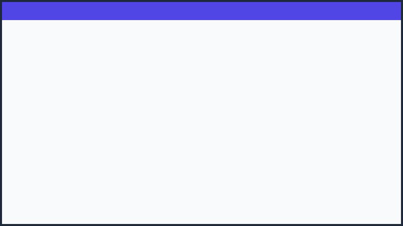
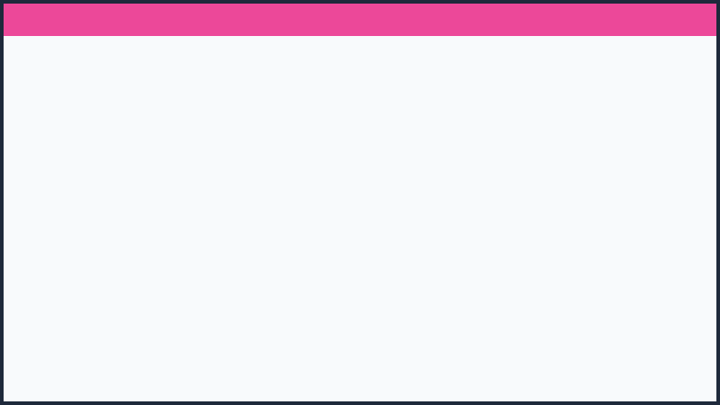
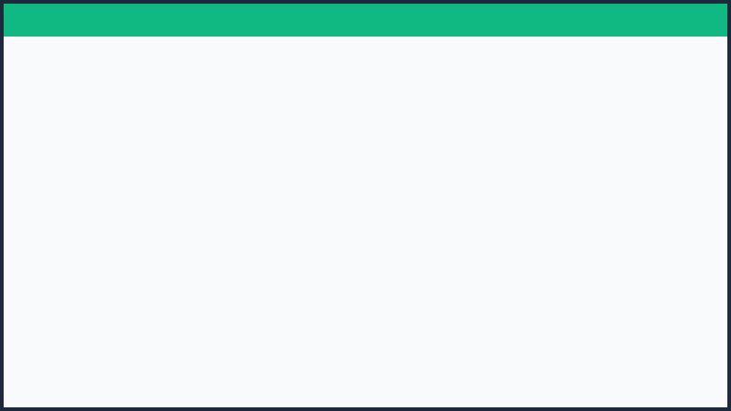
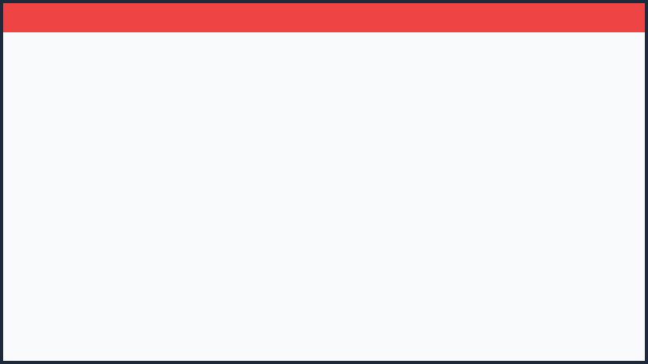

Fase 1: Versión Funcional Inicial
Registro de libro (código, título, autor, estado), préstamo a persona con fecha acordada y lista de atrasados en HTML/CSS/JS puro.

Galería de capturas que documentan cada etapa y evolución de la aplicación.
Registro de libro (código, título, autor, estado), préstamo a persona con fecha acordada y lista de atrasados en HTML/CSS/JS puro.

Incorporación de diseño Android moderno, gradientes Sakura e Indigo, navegación inferior táctil y documentación completa del repositorio.

Almacenamiento persistente en el dispositivo del encargado, descarga y restauración de archivos de respaldo `.json` y datos de ejemplo.

Texto mínimo de 16 px en toda la app, contraste para lectura bajo luz solar directa, etiquetas visibles y regla de un solo botón principal.
Blindaje frente a 10 vectores de error (fechas paradójicas, desbordes de 500 caracteres, doble clic, inyecciones y sincronización entre pestañas).

Reporte tabular del acervo, redacción de recordatorios empáticos con `responseSchema`, datos de prueba (Mock) y fallback con plantilla fija.